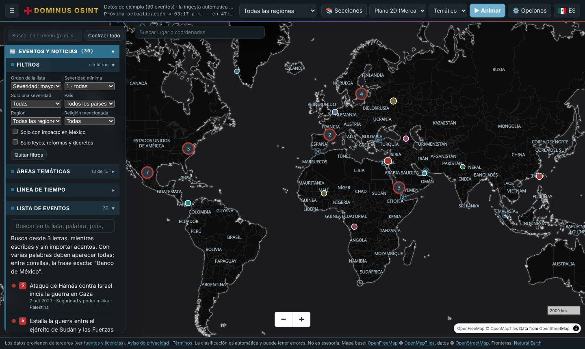
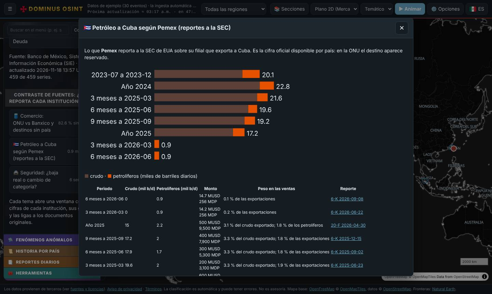
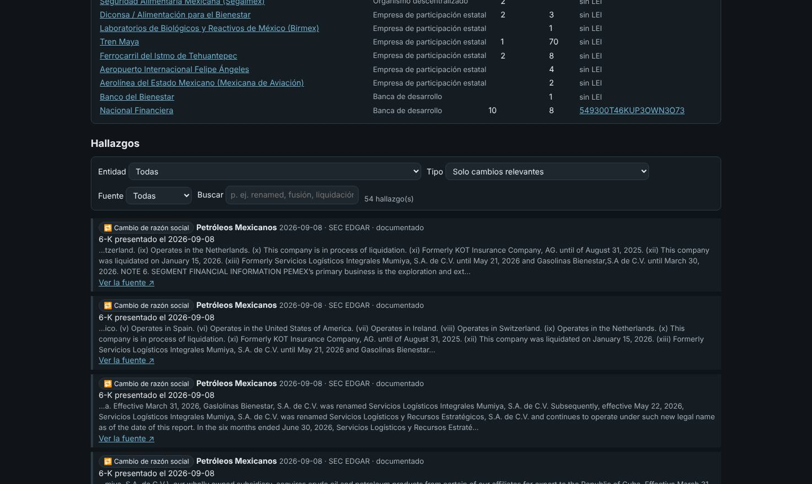
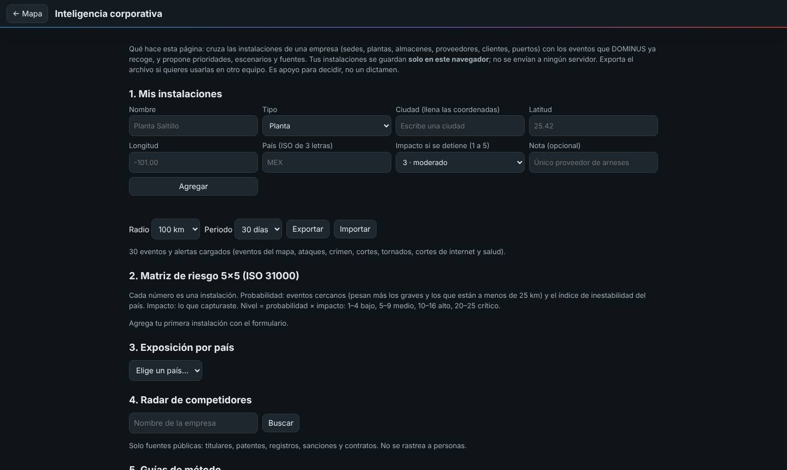
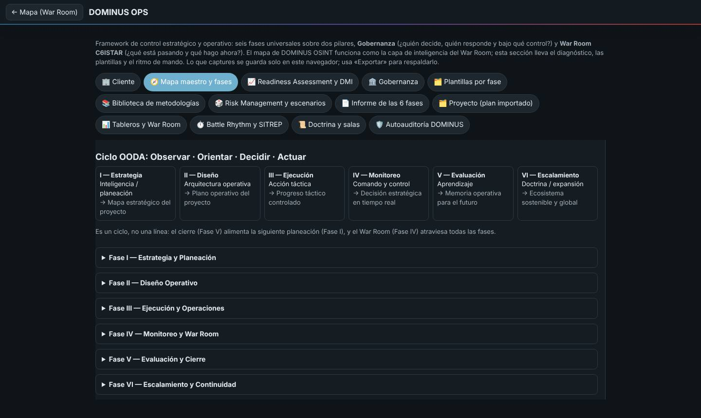
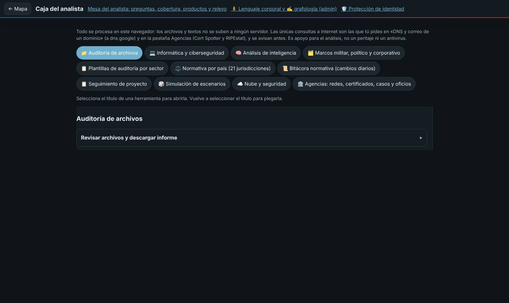

Inteligencia estratégica y operativa
Una plataforma propia de inteligencia de fuentes abiertas que reúne en un mapa y en tableros lo que pasa alrededor de sus instalaciones, rutas, proveedores y mercados, con la fuente de cada dato y alertas cuando algo cambia.
Tres preguntas que llegan a cualquier comité de dirección.
Seguridad, bloqueos, clima extremo, ciberataques y alertas oficiales alrededor de sedes, plantas y rutas, actualizado varias veces por hora.
Contraste entre instituciones (ONU, banco central, reguladores, estadística oficial) para detectar huecos, cambios de categoría o destinos no reportados.
Cambios de razón social, filiales, listas oficiales y actos publicados en el diario oficial de las empresas y entes con los que opera.
Capturas con datos públicos de ejemplo. En una sesión privada se muestran en vivo y con el caso de su organización.






| Sector | Preguntas típicas | Qué se entrega |
|---|---|---|
| Manufactura y logística | ¿Qué rutas y plantas están expuestas a bloqueos, robo o clima esta semana? | Mapa de exposición, alertas y rutas alternas |
| Energía e infraestructura | ¿Qué cambia en el entorno regulatorio y de seguridad de nuestros activos? | Monitor normativo, contraste de fuentes y escenarios |
| Finanzas y seguros | ¿Qué contrapartes cambiaron de nombre, de dueños o aparecen en listas? | Monitor de entidades y debida diligencia documentada |
| Dirección y consejo | ¿Qué riesgos de baja probabilidad y alto impacto deberíamos vigilar? | Tablero de riesgos con probabilidades base y señales |
| Viajes y personal en el extranjero | ¿Dónde está la gente y qué haríamos si cierran un aeropuerto? | Avisos de varios gobiernos, protocolos y plan de comunicaciones |
Estadística oficial, reguladores, diarios oficiales, organismos internacionales y medios. Cada dato conserva su enlace y fecha.
No se rastrea a personas físicas ni se guardan datos personales; las coincidencias de nombre se verifican antes de cualquier conclusión.
La información de su organización se guarda cifrada o en su propio navegador; se aplica la Ley Federal de Protección de Datos Personales en Posesión de los Particulares.
Referencias metodológicas: ISO 31000 (gestión de riesgos), ISO 22301 (continuidad), ISO 31030 (riesgo en viajes) e ICD 203 (estándares analíticos). Son marcos de referencia, no certificaciones.